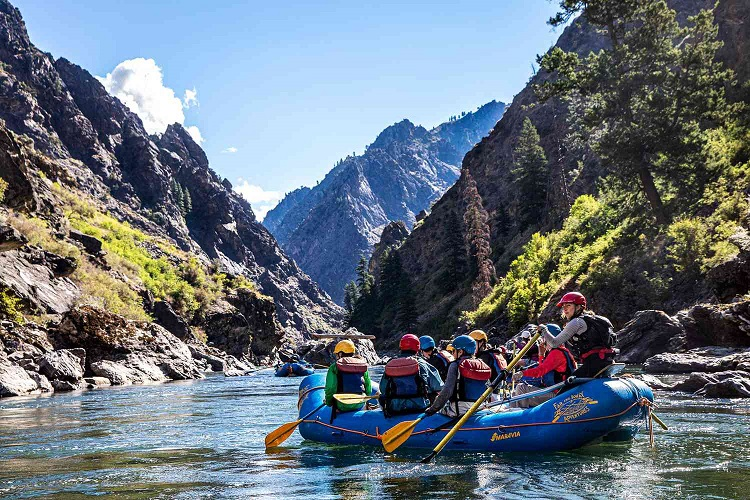

"Conquer the Rapids, Embrace the Adventure: Where Rocky Mountain Waters Ignite the Spirit of the Bold."

Rocky Mountain Whitewater Rafting
History
Rocky Mountain white water rafting has a rich history rooted in the exploration and settlement of the American West. While the specific details may vary, here's a brief overview of the history of white water rafting in the Rocky Mountains:
1. Early Exploration and Settlement (1800s): The Rocky Mountains, spanning several western U.S. states, were initially explored by fur trappers, traders, and pioneers in the 19th century. The rivers flowing through these mountains provided essential transportation routes for early settlers.
2. River Running for Recreation (Mid-20th Century): As transportation methods evolved and the demand for natural recreation increased, people began exploring rivers in the Rocky Mountains for the thrill of navigating white water. Early enthusiasts used primitive rafts and kayaks, often repurposing military surplus equipment.